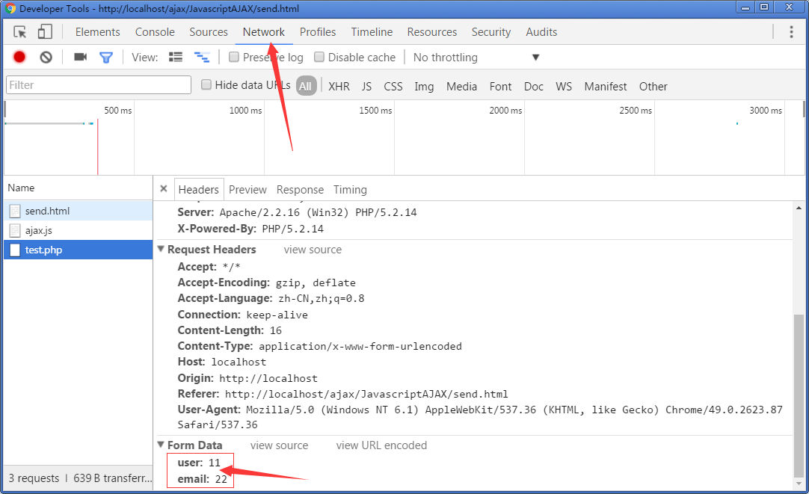

数据发送
发送数据；
POST的数据发送位置：

GET的数据发送位置

POST发送的数据和GET发送的数据被请求地址接收到后显示的格式不一致
GET发送的数据被解析成key和value
POST发送的数据会被解析成字符串
在发送数据之前ajax.send("user=admin"),设置请求头信息
封装AJAX的POST请求方式
注意发送数据参数的默认值
Promise
这个对象有三种状态：Pending（进行中）、Resolved（已完成，又称 Fulfilled）和 Rejected（已失败）。只有异步操作的结果，可以决定当前是哪一种状态，任何其他操作都无法改变这个状态。这也是 Promise 这个名字的由来，它的英语意思就是「承诺」，表示其他手段无法改变。
这个对象状态有一定顺序， 从 Pending 到Resolved 再到 Rejected 这个顺序不可逆;
1.进行中
2.成功了
3.失败了
先看下promise对象怎么用:
1.首先要实例化promise;
var p = new Promise()
2.实例化的时候，这个Promise对象接受一个函数参数,这个函数参数有两个参数: success 和 failed;
var p = new Promise(function(success,failed){})
3.然后在函数内部调用 success 代表 决定(成功); failed 代表 失败;
var p = new Promise(function(success,failed){
//做一些异步操作
setTimeout(function(){
success("成功");
}, Math.round(Math.random()*1000));
setTimeout(function(){
failed("失败了");
},500)
});
4.紧接着是 resolved的好兄弟 then()
then 方法接受两个参数，两个参数都是函数，第一个函数成功调用，第二个函数失败时调用;
而且then函数会等待， 什么时候 promise对象状态改变了， 什么时候then执行;
p.then(function(value){
console.log(value); //成功时调用
},function(value){
console.log(value); //失败时调用
})
promise改造ajax依赖调用
使用promise检测ajax的请求状态，利用promise的成功状态函数，返回ajax请求到的数据
跨域问题
什么情况下会发生跨域：
当本机请求服务器上数据的时候：会发生跨域；
当本地服务器请求其他服务器数据的时候回发生跨域；
跨域怎么处理那？
跨域：

1.为什么有跨域
同源策略：基于浏览器的安全考虑，浏览器各个厂商之间出现了一个约定，这个约定叫做同源策略。这个约定的主要内容就是，域和域之间数据不共通。
2.跨域的用途

当网站发展壮大到一定地步的时候，会建立很多的节点，各个节点的IP是不同的，所以跨域问题就会出现。
当测试阶段数据和本机的IP不通用的时候，那么跨域问题也会发生。
3.为什么要跨域。
因为要获得其他域中的数据；
4.跨域的原理
JSONP
JSONP是什么那？
说到JSONP不得不说一说程序员了：
JSONP是伟大程序员与安全策略的斗争中发明的；
JSONP就是在URL中调用function；
跨域
function liyang(res){
console.log(res)
}
var script=document.createElement('script');
window.onload=function(){
body.appendchild(script)
}
百度搜索接口：
script.src = "https://sp0.baidu.com/5a1Fazu8AA54nxGko9WTAnF6hhy/su?wd=&json=1&p=3&sid=22084_1436_13548_21120_22036_22073&req=2&csor=0&cb=callback”;
分页效果
在js中一行代码结束，最好加上分号
豆瓣读书接口：
https:api.douban.com/v2/book/search?q=javascript&count=1&callback=回调函数名
//此接口可能已经关闭
http://freegeoip.net/json/?callback=回调函数名
地理位置接口
CORS跨域：
在php中加入以下两句就可以实现跨域访问
header('Access-Control-Allow-Origin:*');//允许所有来源访问
header('Access-Control-Allow-Method:POST,GET');//允许访问的方式